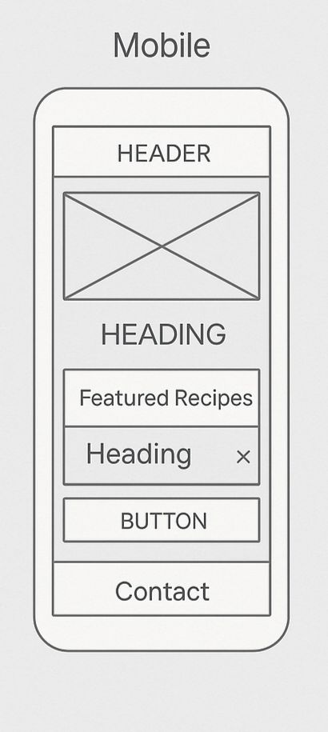
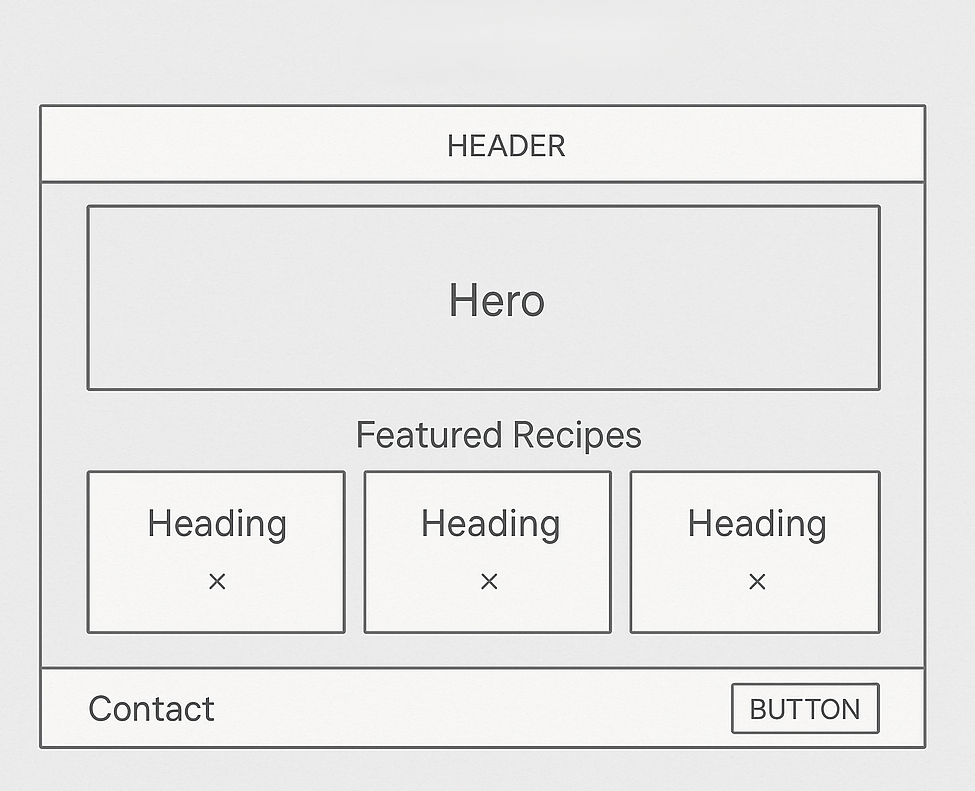

Name: Cooking Delight
This name reflects the joy of exploring new recipes and sharing the delight of good food with others. It's friendly, memorable, and suitable for a personal or community-based recipe site.
Optional domain availability: cookingdelight.com (to be checked)
The purpose of this site is to share categorized cooking recipes, including breakfast, lunch, dinner, and desserts. Each recipe includes ingredients, preparation steps, and tips. Users will also find featured recipes on the homepage and a contact form to send their own suggestions or ask questions.
The selected color palette is designed to feel warm and welcoming, with a slight rustic kitchen vibe.
Mobile View:
Desktop View:
Note: These are placeholder images. You can replace them with hand-drawn wireframes or digital sketches later.